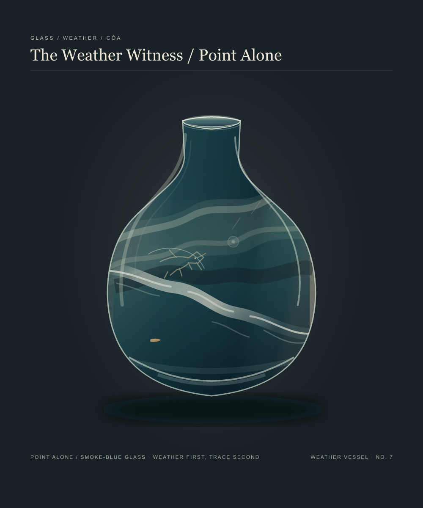
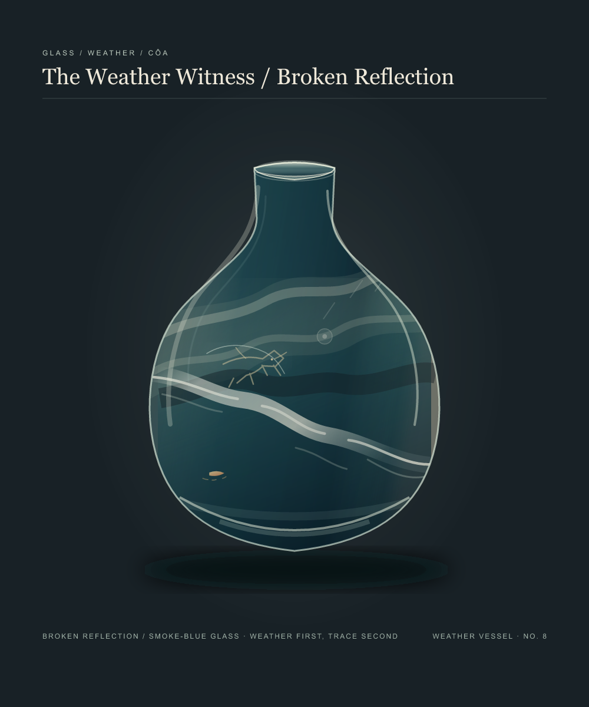

← Weather Witness galleryThe Warm Mark
The countermark stays on the far side of the vessel, away from the break. I held the glass, horse, and weather still while changing only what the water keeps beneath it.

Point alone / no reflection
Broken reflection / three small tracesThe long arc gave the point a ready answer. Three short marks leave the water unsettled; the light touches the surface without becoming another boat.